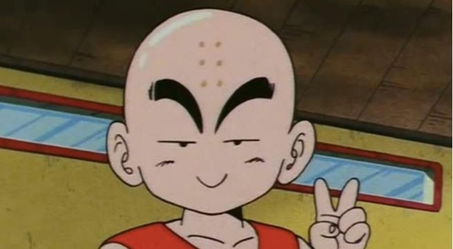

|  | Krilin (クリリン, Kuririn), llamado Krilín en España, es un personaje del manga y anime de Dragon Ball. Es uno de los principales discípulos de Kame-Sen'nin, Guerrero Z, y el mejor amigo de Son Goku. Es junto a Bulma uno de los personajes de apoyo principales de Dragon Ball, Dragon Ball Z y Dragon Ball Super. En el Arco de Majin Boo, se retira de las artes marciales, optando por formar una familia, como el esposo de la Androide Número 18 y el padre de Marron. |
|